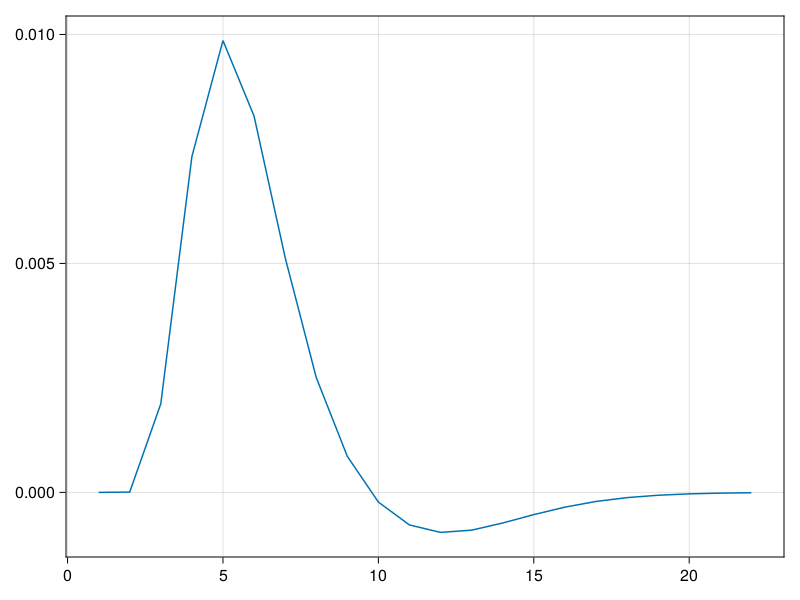
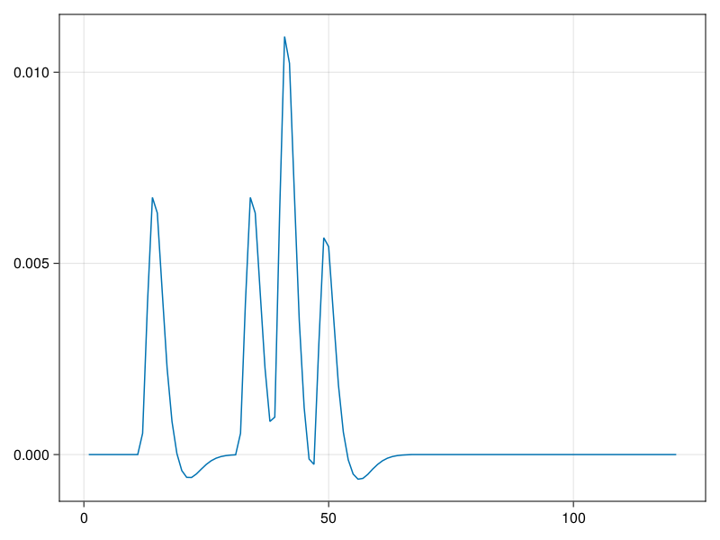
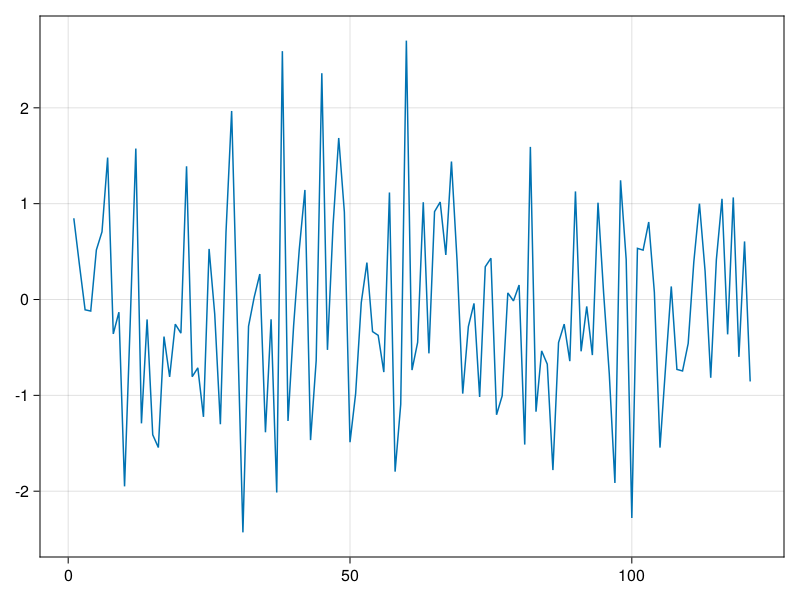
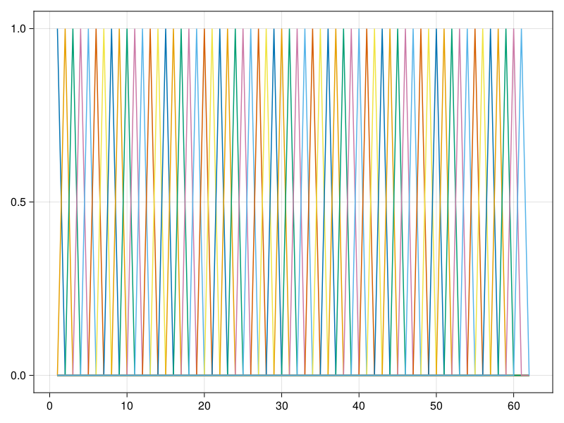

Basis Functions
This document provides you an explanation of basisfunctions. We start with fMRI because they are very popular.
HRF / BOLD
We want to define a basisfunction. There are currently only few basisfunction implemented in Unfold.jl, but your imagination knows no borders!
We first have a look at the BOLD-HRF basisfunction:
using Unfold,DSP
TR = 1.5
bold = hrfbasis(TR) # using default SPM parameters
eventonset = 1.3
bold_kernel = e->Unfold.kernel(bold,e)
lines(bold_kernel(eventonset)[:,1]) # (returns a matrix, thus [:,1])
This is the shape that is assumed to reflect activity to an event. Generally, we would like to know how much to scale this response-shape per condition, e.g. in condA we might scale it by 0.7, in condB by 1.2.
But let's start at the beginning and first simulate an fMRI signal. Then you will also appreciate why we need to deconvolve it later.
Convolving a responseshape to get a "recorded" fMRI signal
We start with convolving this HRF function with a impulse-vector, with impulse at the event onsets
y = zeros(100) # signal length = 100
y[[10,30,45]] .=0.7 # 3 events at given for condition A
y[[37]] .=1.2 # 1 events at given for condition B
y_conv = conv(y,bold_kernel(0)) # convolve!
lines(y_conv[:,1])
Next we would add some noise
using Random
y_conv += randn(size(y_conv))
lines(y_conv[:,1])
🎉 - we did it, we simulated fMRI data.
Now you can appreciate, that the conditions overlap in time with eachother. To get back to the original amplitude values, we need to specify a basis function, and use Unfold to deconvolve the signals.
Events could fall inbetween TR (the sampling rate). Some packages subsample the time signal, but in Unfold we can directly call the bold.kernel function at a given event-time, which allows for non-TR-multiples to be used.
FIR Basis Function
Okay, let's have a look at a different basis function: The FIR basisfunction.
basisfunction = firbasis(τ=(-0.4,.8),sfreq=50,name="myFIRbasis")
fir_kernel = e->Unfold.kernel(basisfunction,e)
m = fir_kernel(0)
f = Figure()
f[1,1] = Axis(f)
for col = 1:size(m,2)
lines!(m[:,col])
end
current_figure()
First thing to notice, it is not one basisfunction, but a basisfunction set. Thus every condition will be explained by several basisfunctions!
Not very clear, better show it in 2D
fir_kernel(0)[1:10,1:10]10×10 SparseArrays.SparseMatrixCSC{Int64, Int64} with 19 stored entries:
1 ⋅ ⋅ ⋅ ⋅ ⋅ ⋅ ⋅ ⋅ ⋅
0 1 ⋅ ⋅ ⋅ ⋅ ⋅ ⋅ ⋅ ⋅
⋅ 0 1 ⋅ ⋅ ⋅ ⋅ ⋅ ⋅ ⋅
⋅ ⋅ 0 1 ⋅ ⋅ ⋅ ⋅ ⋅ ⋅
⋅ ⋅ ⋅ 0 1 ⋅ ⋅ ⋅ ⋅ ⋅
⋅ ⋅ ⋅ ⋅ 0 1 ⋅ ⋅ ⋅ ⋅
⋅ ⋅ ⋅ ⋅ ⋅ 0 1 ⋅ ⋅ ⋅
⋅ ⋅ ⋅ ⋅ ⋅ ⋅ 0 1 ⋅ ⋅
⋅ ⋅ ⋅ ⋅ ⋅ ⋅ ⋅ 0 1 ⋅
⋅ ⋅ ⋅ ⋅ ⋅ ⋅ ⋅ ⋅ 0 1(all . are 0's)
The FIR basisset consists of multiple basisfunctions. That is, each event will now be timeexpanded to multiple predictors, each with a certain time-delay to the event onset. This allows to model any arbitrary linear overlap shape, and doesn't force us to make assumptions on the convolution kernel (like we had to do in the BOLD case)